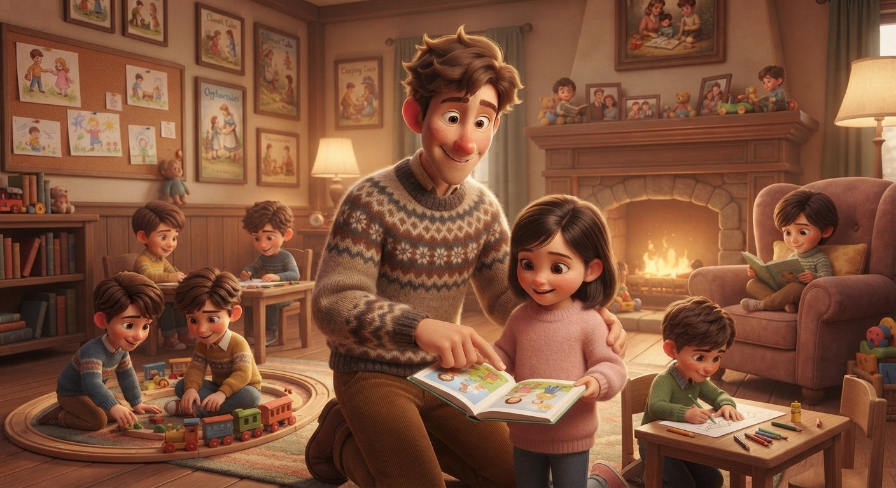

Nunca logró conectar con familias adoptivas y con el tiempo comienza a ayudar cada vez más en las tareas del orfanato y cuidado de los niños.
Comienza a estudiar el profesorado de matemáticas pero decide abandonar la carrera por el fallecimiento de su cuidadora, quien deseaba dejarle a cargo el establecimiento.
